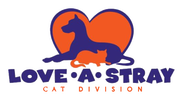
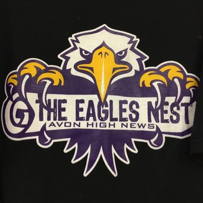

About Me ~ Lyla Kramer
-
I was originally born in China and I moved to the U.S. when I was only a few months old, I have dual citizenship in both countries. My parents have traveled all throughout their lives and have given me such great memories in being able to see many of the states in the country as well visiting other countries like Canada and Mexico. I share their love of travel and plan to visit all parts of the world someday.
-
My family always had pets and was involved with animals and I currently have four cats in Ohio that are living with my parents. During my time in highschool and middle school I often worked with local rescue groups in my city such as Fido’s Companion and Love-A-Stray. I fostered dogs and helped out at charity events for Fido’s Companion Rescue and helped take care of the cats at Love-A-Stray’s shelter. I plan on continuing to take care of more cats and dogs in the future by adopting some of my own!
-
Reading and writing have also been something that I enjoy, especially when I was younger. When I was a junior in high school, my friend encouraged me to write for the newspaper with her and by my second year there I became the second Editor-in-chief for the Eagles Nest Newspaper. The editors were responsible for writing, editing, publishing, and distributing the school’s newspaper. This class was entirely self-funded and took a lot of dedication and hard work to produce the quarterly newspapers. Not only did we receive state awards for our work, but we were able to work on a city project. This great opportunity allowed us to help give back to the community. Our class researched about the founding of the city where it would be displayed on plaques in a park in the city. These two memorable years of my life taught me a lot about responsibility and allowed me to create many connections with people.
-
When I was quite young, I often saw my dad playing video games on his computer, and I was already hooked by them. I spent a lot more of my time playing video games on the Wii, computer, and Nintendo DS. My love of animals drew me towards all sorts of fun games. As I grew up, I really started to get into solely computer games. I realized that not many of my friends were as passionate about it as I was, but I was able to make connections with people all over the world thanks to such great online communities. Video games have affected my life in such a positive way and I hope to be involved with them as they mean a lot to me and who I am today.
Check out their links!

